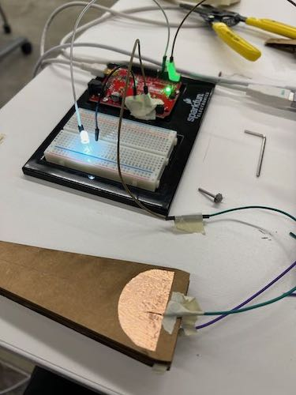

<div class="textcontainer">
<p class="margin"> </p>
<h3>Week 6: Electronic Inputs</h3>
<h4>Assignment: Build a Capacitive Sensor</h4>
This week, Kassia helped me develop a new idea for the pillbox project that included a capacitive sensing grid. Each compartment would have a capacitive sensor at the base that can sense the weight of the tablets so the device knows when pills have been placed in the box. If the capacitor senses the correct pill weight, then the indicator light for the compartment turns off. For the assignment, I attempted a simple 2x1 capacitive sensing grid with the idea of calibrating it by placing ibuoprofen tablets on the capacitor.<br>
I followed the tutorial on the class website and used CapacitiveSensor library example code, which I modified for use with only 2 sensors:
<p class="margin"> </p>
<div class="flexrow">
<img src="./capacative sensor circut.jpeg" alt="a prototype capacitive sensor made of cardboard" width=50%>
</div>
<br>
<html lang="en">
<head>
<meta charset="UTF-8">
<meta name="viewport" content="width=device-width, initial-scale=1.0">
<title>Inline Code Example</title>
</head>
<body>
<h5>Code:</h5>
<code>
#include <CapacitiveSensor.h><br>
<br>
/*<br>
* CapitiveSense Library Demo Sketch<br>
* Paul Badger 2008<br>
* Uses a high value resistor e.g. 10M between send pin and receive pin<br>
* Resistor effects sensitivity, experiment with values, 50K - 50M. Larger resistor values yield larger sensor values.<br>
* Receive pin is the sensor pin - try different amounts of foil/metal on this pin<br>
*/<br>
<br>
CapacitiveSensor cs_4_2 = CapacitiveSensor(4,2); // 10M resistor between pins 4 & 2, pin 2 is sensor pin, add a wire and or foil if desired<br>
CapacitiveSensor cs_4_6 = CapacitiveSensor(4,6); // 10M resistor between pins 4 & 6, pin 6 is sensor pin, add a wire and or foil<br>
<br>
void setup() <br>
{<br>
cs_4_2.set_CS_AutocaL_Millis(0xFFFFFFFF); // turn off autocalibrate on channel 1 - just as an example<br>
Serial.begin(9600);<br>
}<br>
<br>
void loop() <br>
{<br>
long start = millis();<br>
long total1 = cs_4_2.capacitiveSensor(30);<br>
long total2 = cs_4_6.capacitiveSensor(30);<br>
<br>
Serial.print(millis() - start); // check on performance in milliseconds<br>
Serial.print("\t"); // tab character for debug windown spacing<br>
<br>
Serial.print(total1); // print sensor output 1<br>
Serial.print("\t");<br>
Serial.println(total2); // print sensor output 2<br>
<br>
delay(300); // arbitrary delay to limit data to serial port <br>
}<br>
</code>
</body>
</html><br>
This was a good idea in theory but in practice it was a flop. When it came time to calibrate, adding pills to the sensor didn't change the Arduino reading. I thought this might be because I was using a 1 M ohm resistor, so I tried 3 and 10 M ohms to make it more sensitive. 3 M ohms still wasn't sensitive enough, but 10 M ohms was a bit too sensitive and the readings were affected by surrounding objects (mostly by me). I think the capacitance between the pills and the sensor was too small because of their small size (less surface area touching the capacitor) and their dielectric constant may be too low. My next attempt will be a transmit-receive weight sensor that will hopefully be able to sense the small changes in plate position caused by adding more tablets. I think using a thin but flexible dielectric between the two foil sheets will be more sensitive and easier to calibrate, but I'll try a variety of materials/thicknesses.
<p class="margin"> </p>
<div class="flexrow">

<img src="./led_demo.gif" alt="a gif animation of the LED getting brighter and dimmer as the arms move">
</div>
<p class="caption">The version of the circuit with the added LED indicator.</p>
</div>